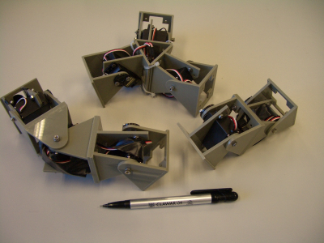

|
Paper 12: ” Motion of Minimal Configurations of a Modular Robot: Sinusoidal, Lateral Rolling and Lateral Shift” |
|
 |
Juan
González-Gómez and
y Eduardo
Boemo,”Motion
of Minimal Configurations of a Modular Robot: Sinusoidal, Lateral
Rolling and Lateral Shift” , 8th
International Conference on Climbing and Walking Robots. CLAWAR.
London, September 2005.
Complex
modular robots can be constructed by means of simple modules. There
is no geometric superior size to the total number of modules that
can be added. The number of possible configurations growth
exponentially. However, an inferior limit exists: the minimum number
of modules needed to achieve the locomotion. In this paper, three
minimal configurations has been developed using only two and three
one-degree-of-freedom modules. The simplest one is pitch-pitch
configuration, composed of two modules, which can move in a straight
line, forward or backward, at different speeds. The second one is
the pitch-yaw-pitch , with one more module that moves in the yaw
axis. In this case, three new kinds of motion can be achieved: 2D
sinusoidal motion, lateral shift and lateral rolling. Finally, the
third configuration is a three-modules star, that can be moved in
three directions as well as rotated parallel to the ground.
|
Slides: [PDF] [OpenOffice] |
|
|
This paper received the “Industrial Robot Highly Commended Award” |
|
Files for downloading |
|
multicube-clawar.pdf (378KB) |
Paper in PDF format |
|
multicube-clawar.tgz (4 MB) |
Latex sources and figures of the paper |
|
pres-muticube-clawar.pdf (1.2 MB) |
Slices in PDF format |
|
pres-muticube-clawar.sxi (1.5 MB) |
Slices for OpenOffice 1.1 |
The references of the paper are avaible here
Many thanks to Dr. Houxiang Zhang, who give me the idea to research and implement the lateral rolling gait. Thank you very much! :-)
|
|